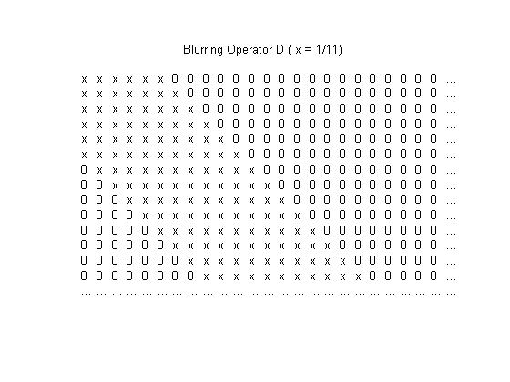
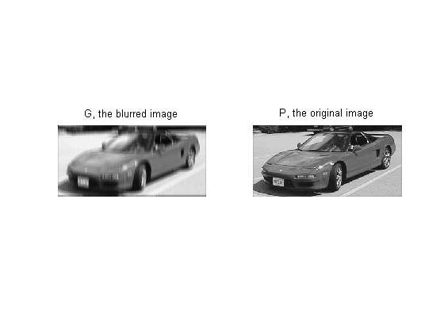
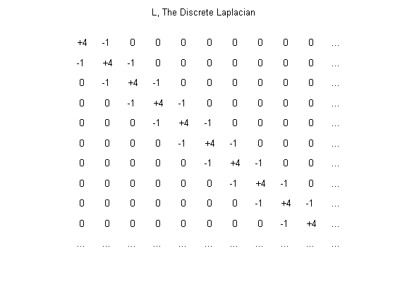
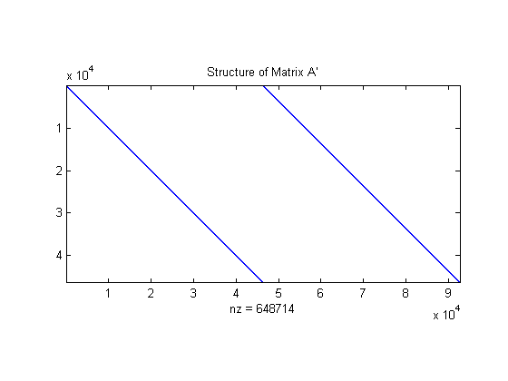
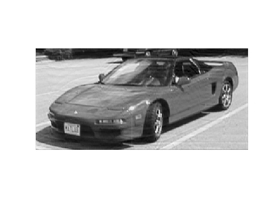

This demo shows how the Optimization Toolbox can be used to solve a large-scale constrained linear least-squares optimization problem to recover a blurred image.
We will add motion blur to a photo of Mary Ann and Matthew sitting in Joe's car, then try to restore the original. Our starting image is this black and white image, contained the m x n matrix P. Each element in the matrix represents a pixel's gray intensity between black and white (0 and 1).
load optdeblur P [m,n] = size(P); mn = m*n; imagesc(P); colormap(gray); axis off image; title(sprintf('%i x %i (%i pixels) ',m,m,mn));
We can simulate the effect of vertical motion blurring by averaging each pixel with the 5 pixels above and below. We construct a sparse matrix D, that will do this with a single matrix multiply.
% Create D. blur = 5; mindex = 1:mn; nindex = 1:mn; for i = 1:blur mindex=[mindex i+1:mn 1:mn-i]; nindex=[nindex 1:mn-i i+1:mn]; end D = sparse(mindex,nindex,1/(2*blur+1)); % Draw a picture of D. cla axis off ij xs = 25; ys = 15; xlim([0,xs+1]); ylim([0,ys+1]); [ix,iy] = meshgrid(1:(xs-1),1:(ys-1)); l = abs(ix-iy)<=5; text(ix(l),iy(l),'x') text(ix(~l),iy(~l),'0') text(xs*ones(ys,1),1:ys,'...'); text(1:xs,ys*ones(xs,1),'...'); title('Blurring Operator D ( x = 1/11)')
We multiply the image by this operator to create the blurred image. P is the original image, D is the operator, and G is the blurred image.
G = D*P(:); imagesc(reshape(G,m,n)); axis off image;
Now, let's pretend Joe took this blurred picture G from a moving elevator. Assume we know how fast the elevator is moving, so we know the blurring operator D. How well can we remove the blur and recover the original image P?
The simplest approach is to solve the least squares problem:
min( | D*P(:) - G|^2 )
subplot(1,2,1); imagesc(reshape(G(:),m,n)); axis off image; title('G, the blurred image'); subplot(1,2,2); imagesc(reshape(P(:),m,n)); axis off image; title('P, the original image');
In practice the results obtained with this simple approach tend to be noisy. To compensate for this, a regularization term is added:
0.0004*| L*P |^2
L is the discrete Laplacian, which relates each pixel to those surrounding it. Since we know we are looking for a gray intensity, we also impose the constraint that the elements of P must fall between 0 and 1.
% Create L. L = sparse( [1:mn,2:mn,1:mn-1], [1:mn,1:mn-1,2:mn], ... [4*ones(1,mn) -1*ones(1,2*(mn-1))] ); % Draw a picture of L. subplot(1,1,1) ; delete(gca); axis ij axis off; xs=11; ys=11; xlim([0,xs+1]); ylim([0,ys+1]); [ix,iy]=meshgrid(1:(xs-1),1:(ys-1)); four=(ix==iy); one=(abs(ix-iy)==1); text(ix(one),iy(one),'-1') text(ix(four),iy(four),'+4') text(ix(~four & ~one),iy(~four & ~one),' 0') text(xs*ones(ys,1),1:ys,'...'); text(1:xs,ys*ones(xs,1),'...'); title('L, The Discrete Laplacian')
To obtain the deblurred picture we want to solve for P:
min( | D*P(:) - G(:) |^2 + 0.0004*| L*P(:) |^2 )
We can simplify this expression by defining A and b:
A = [D ; 0.02*L]; b = [ G(:) ; zeros(mn,1) ];
which changes the last equation to:
min( | A*P(:) - b |^2 )
subject to 0<=P<=1. Both matrices D and L relate each pixel to a few of its neighbors. This makes A structured and sparse.
A = [D ; 0.02*L]; b = [ G(:) ; zeros(mn,1) ]; spy(A'); axis equal tight title('Structure of Matrix A''');
Because A is sparse, we can use a large-scale algorithm to solve this linear least squares optimization problem. We call LSQLIN with A, b, lower bounds, upper bounds, and options.
Due to the size of the optimization problem this process takes several minutes. For this demo, the solution has been previously calculated and saved.
options = optimset('LargeScale', 'on','Display', 'off' ); %x = lsqlin(A, b, [], [], [], [], zeros(mn,1), ones(mn,1), [], options); load optdeblur x imagesc(reshape(x,m,n)) axis off image
Let's compare the blurred and deblurred pictures.
subplot(1,2,1); imagesc(reshape(G,m,n)); axis image; axis off; title('Blurred'); subplot(1,2,2); imagesc(reshape(x,m,n)); axis image; axis off; title('De-Blurred');